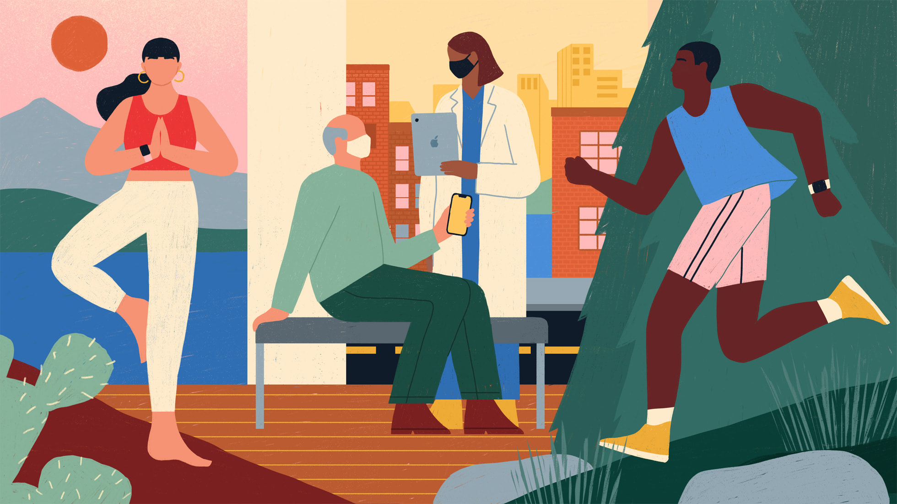

We describe the sources of our data and the cleaning process.

First Data Set
The 2023 Behavioral Risk Factor Surveillance System dataset gathers standardized and state-specific data on health risks and behaviors, chronic conditions, healthcare access, mental health, and other factors related to leading causes of death and disability in the U.S. The data was collected by the Centers for Disease Control and Prevention (CDC) in partnership with state health departments and U.S. territories. Key topics surveyed in 2023 included health status, exercise, chronic conditions, tobacco and alcohol use, immunizations, HIV/AIDS, mental health, seatbelt use, driving behaviors, and COVID. Data is self-reported; proxy interviews are not conducted. Landline interviews are conducted with randomly selected adults in households, while cellular interviews focus on adults living in private residences or college housing.
There are 350 total variables in the dataset and it contains 433,323 observations. The dataset is available at here.
We intended to explore the variables from each categorization:
The Identity-Based Category: For variables that describe the identity of respondents
_STATE: Renamed to State. State Information
EDUCA: education status
_RACE: Renamed to RACE. race of participant
The Economic Category: Includes variables that detail the economic background of respondents
MEDCOST1:Renamed to medical_cost. Health Care Access
PRIMINS1: Renamed to insurance_status. Have any health insurance
_INCOMG1: income categories of participant
SDHBILLS: Inability of pay rent, mortgage, or utility bills.
The Health Category: includes variables that contain information regarding mental health and variables with information describing the physical well-being of respondents.
GENHLTH: Renamed to Health_status. Health Status
PHYSHLTH: Number of Days Physical Health Not Good
MENTHLTH: Number of Days Mental Health Not Good
SDLONELY: Renamed to loneliness_feeling_frequency. How often do you feel lonely?
LSATISFY: In general, how satisfied are you with your life?
TOLDHI3: Renamed to high cholesterol. Have you ever been told by a doctor, nurse or other health professional that your cholesterol is high?
The Past Exposure Category: details Adverse childhood experiences
ACEDEPRS: Did you live with anyone who was depressed, mentally ill, or suicidal?
ACEDRINK: Did you live with anyone who was a problem drinker or alcoholic?
ACEDRUGS: Did you live with anyone who used illegal street drugs or who abused prescription medications?
The Current Behaviors Category: Various behaviors engaged in by participants
MARIJAN1: During the past 30 days, on how many days did you use marijuana or cannabis?
AVEDRNK3: Renamed to Alcohol_Drinks_Per_Day. Avg alcoholic drinks per day in past 30
Cleaning:
Regardless of the types of variables, the dataset reports everything using numerical values. For example, “99” may represent the respondent refusing to answer. Therefore, we renamed and recoded many of the variables to make our data clearer in cleaning script. In addition, we also combined variables that are describing the same thing. For example, we combined the number of times respondents did exercise 1(that they spent the most time doing) and exercise 2 (that they spent the second most time doing) per month.
# A tibble: 5 × 5
RACE State Health_status Exercise_frequency insurance_status
<chr> <chr> <fct> <dbl> <chr>
1 White Alabama Fair 39.0 Government Insurance
2 White Alabama Very Good 43.3 Government Insurance
3 White Alabama Very Good 34.6 Government Insurance
4 White Alabama Good 34.6 No Insurance
5 White Alabama Good 17.0 Government Insurance
We have filtered the missing values in our major variables to ensure the first regression model we are going to do will not be influenced by those. We removed the NA values from the combined variable “Exercise_frequency” and found that most of the NA values have been removed. One additional R package named “haven” is also used except tidyverse and dyplyr for reading the original dataset in XPT format. We have cleaned and transformed the dataset to make it more readable and suitable for analysis. By converting numeric codes into human-readable labels (e.g., health status, race, emotional support) and filtering out incomplete records, the code prepares a dataset that is easier to interpret and analyze, facilitating further analysis and visualization.
Second Data Set
During our work, we realized that we still needed more economic factors and context in our research project. We tried to find another dataset and select one from five possible datasets, and the chosen one “Regional Data: GDP and Personal Income” from the Bureau of Economic Analysis (BEA) Interactive Data Application.
This dataset is the economic summary statistics for all the States in the U.S. in 2023, which includes personal income, GDP, consumer spending, price indexes, and employment. This dataset is available at the Bureau of Economic Analysis, U.S. Department of Commerce. We try to merge it into our first dataset examining how economic factors like GDP and employment levels impact public health behaviors.
The challenge we met in the second data set is that we will face many incompatible problems with the first data set and need to do many cleaning jobs when we merge it, such as we need to reshape the second data set to the wide format and there are many unnecessary columns and rows.
The following variables were used in our analysis:
Gross domestic product (GDP): Total market value of goods and services at current prices without inflation adjustment.
Personal income: Total earnings received by individuals, indicating overall economic well-being.
There are 15 total variables in the dataset and it contains 1105 observations.
Cleaning
income_clean <- income_data|>select(-LineCode)|>mutate(`2023`=if_else(`2023`=="(NA)", NA, `2023`))|>pivot_wider(names_from = Description, values_from =`2023`)|>head(-13)|>select_if(~!any(is.na(.)))|>filter(GeoFips !="00000")|>mutate(across(`Real GDP (millions of chained 2017 dollars) 1`:`Total employment (number of jobs)`, as.numeric))
To deal with incompatible problems we met, the BEA dataset was cleaned by removing unnecessary columns and rows, handling placeholders as NA, reshaping the data to a wide format, dropping incomplete columns, filtering non-state entries, and converting relevant columns to numeric for analysis.
Merging
merged_data <-merge(brfss_clean, income_clean, by.x ="State", by.y ="GeoName", all =FALSE)
After we cleaned the new dataset, we tried to merge the “Regional Data: GDP and Personal Income” dataset to the original one on state names (State and GeoName). We successfully combined our two datasets on the “state” variable that was present in both datasets. This resulted in a dataset that provided a more comprehensive financial perspective on the factors we are currently looking at. Some of the data analytic questions we explored in the new dataset include: Whether state income is correlated with physical health status, the relationship between state GDP on overall loneliness level, the relationship between alcohol use and state employment quantity, the relationship between Insurance Status, per capita current dollar statistics for each state, and so on.